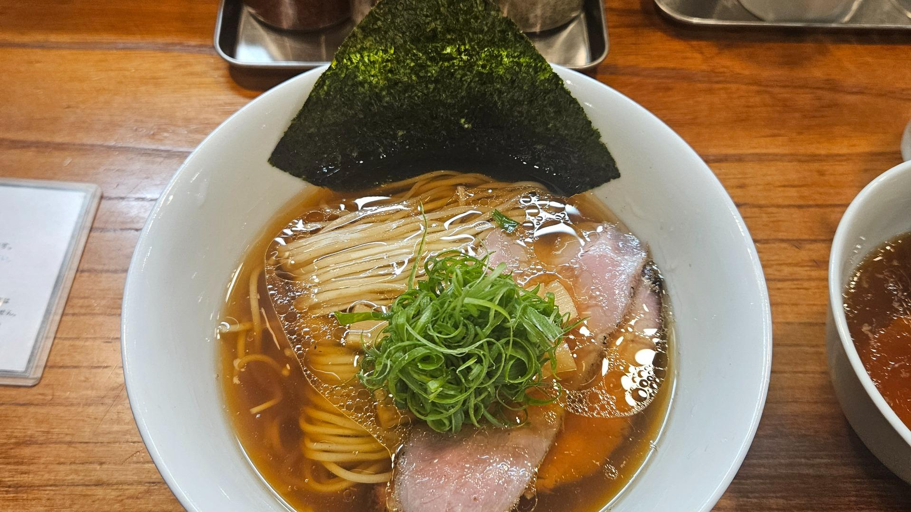
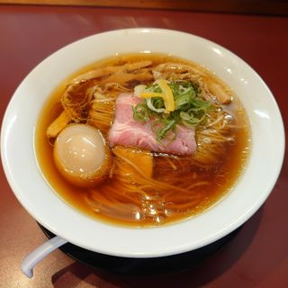
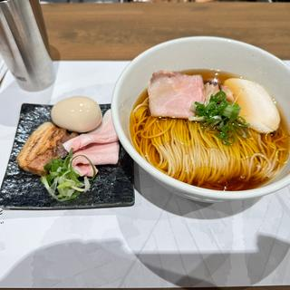
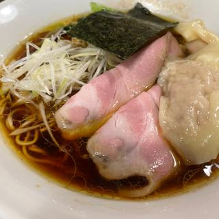
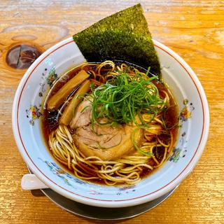

田所監修！栃木の最強ラーメンマップ！！
お知らせ
お気に入り

醤油ラーメン
味噌ラーメン
豚骨ラーメン
あっさり
こってり

麺童 豊香
今日 11:00～14:00, 18:00～20:30
小山駅から1.81km
栃木県小山市土塔228-36 グレイド1-101
詳細を見る
手打ち 焔(ほむら)
11:00～15:00
栃木県那須塩原市上厚崎374-2

中華そば とちの葉
今日 11:00～15:00
新栃木駅から829m
栃木県栃木市嘉右衛門2-11
手打ち切麺 一桜
11:30～14:30
水曜日定休日
栃木県宇都宮市一ノ沢町252-2

らぁめん篠崎
月・火・水 11:30-14:00 17:30-20:30
金・土・日 06:30-09:00 11:30-14:00
宇都宮駅から1.18km
栃木県宇都宮市東宿郷5-3-7 チサンマンション東宿郷 1F

中華そば 一楽
火・水・木・金 11:30-14:30
土・日 11:30-14:30 18:00-20:30
小山駅から832m
栃木県小山市城東3-6-30